Publication
*: indicating equal contribution or alphabetic ordering.
Selective Publications
 |
Entropic Distribution Matching in Supervised Fine-tuning of LLMs: Less Overfitting and Better DiversityZiniu Li, Congliang Chen, Tian Xu, Zeyu Qin, Jiancong Xiao, Ruoyu Sun, Zhi-Quan Luo |
| 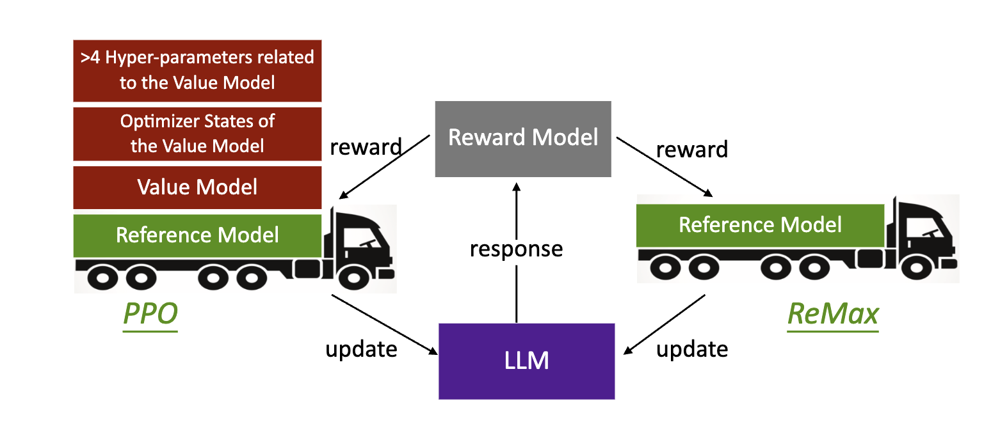 | ReMax: A Simple, Effective, and Efficient Reinforcement Learning Method for Aligning Large Language ModelsZiniu Li, Tian Xu, Yushun Zhang, Zhihang Lin, Yang Yu, Ruoyu Sun, Zhi-Quan Luo |
 |
Imitation Learning from Imperfection: Theoretical Justifications and AlgorithmsZiniu Li* , Tian Xu*, Zeyu Qin, Yang Yu, Zhi-Quan Luo |
 |
HyperDQN: A Randomized Exploration Method for Deep Reinforcement Learning
Ziniu Li, Yingru Li, Yushun Zhang, Tong Zhang, Zhi-Quan Luo |
| 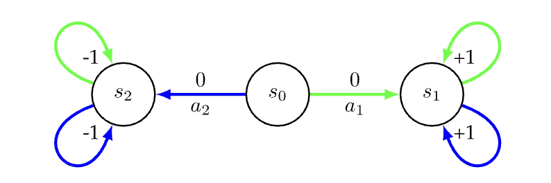 | Error Bounds of Imitating Policies and Environments for Reinforcement Learning
Tian Xu, Ziniu Li, Yang Yu |
2024
| 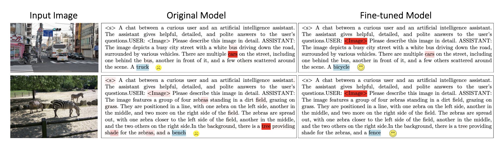 | Mitigating Hallucination in Large Vision-Language Models via Modular Attribution and InterventionTianyun Yang, Ziniu Li, Juan Cao, Chang Xu |
 |
Pruning for Robust Concept Erasing in Diffusion ModelsTianyun Yang, Ziniu Li, Juan Cao, Chang Xu |
 |
Why Transformers Need Adam: A Hessian PerspectiveYushun Zhang, Congliang Chen, Tian Ding, Ziniu Li, Ruoyu Sun, Zhi-Quan Luo |
 |
Unlocking Black-Box Prompt Tuning Efficiency via Zeroth-Order OptimizationHeshen Zhan, Congliang Chen, Tian Ding, Ziniu Li, Ruoyu Sun |
|
|
Entropic Distribution Matching in Supervised Fine-tuning of LLMs: Less Overfitting and Better DiversityZiniu Li, Congliang Chen, Tian Xu, Zeyu Qin, Jiancong Xiao, Ruoyu Sun, Zhi-Quan Luo |
| 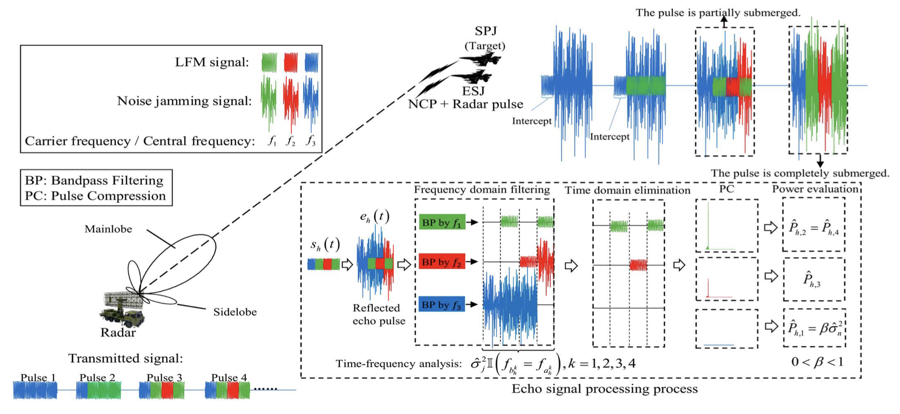 | Sensing Jamming Strategy from Limited Observations: An Imitation Learning PerspectiveYoulin Fan, Bo Jiu, Wenqiang Pu, Ziniu Li, Kang Li, Hongwei Liu |
 |
Adam-mini: Use Fewer Learning Rates To Gain MoreYushun Zhang, Congliang Chen, Ziniu Li, Tian Ding, Chenwei Wu, Yinyu Ye, Zhi-Quan Luo, Ruoyu Sun |
 |
BWArea Model: Learning World Model, Inverse Dynamics, and Policy for Controllable Language GenerationChengxing Jia, Pengyuan Wang, Ziniu Li, Yi-Chen Li, Zhilong Zhang, Nan Tang, Yang Yu |
| 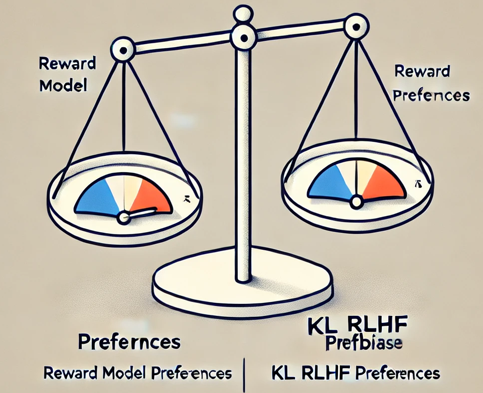 | On the Algorithmic Bias of Aligning Large Language Models with RLHF: Preference Collapse and Matching RegularizationJiancong Xiao, Ziniu Li, Xingyu Xie, Emily Getzen, Cong Fang, Qi Long, Weijie J. Su |
ReMax: A Simple, Effective, and Efficient Reinforcement Learning Method for Aligning Large Language ModelsZiniu Li, Tian Xu, Yushun Zhang, Zhihang Lin, Yang Yu, Ruoyu Sun, Zhi-Quan Luo |
| 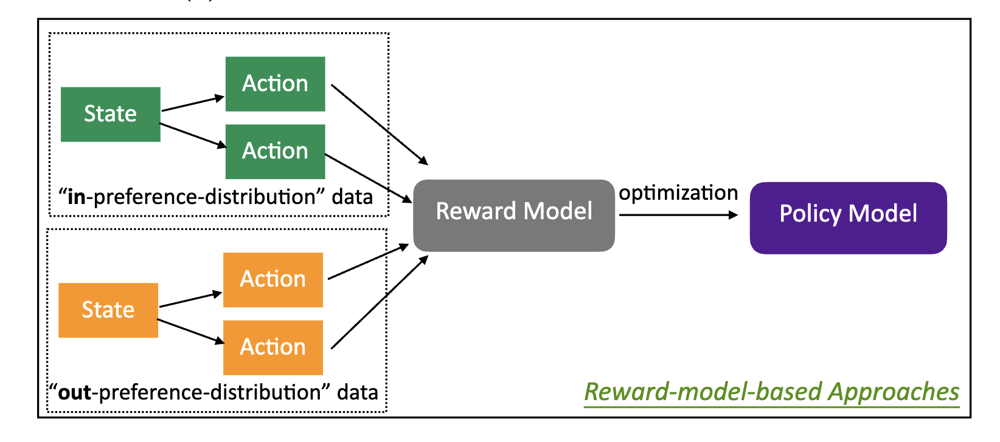 | When is RL better than DPO in RLHF? A Representation and Optimization PerspectiveZiniu Li*, Tian Xu*, Yang Yu |
2023
|
|
Imitation Learning from Imperfection: Theoretical Justifications and AlgorithmsZiniu Li* , Tian Xu*, Zeyu Qin, Yang Yu, Zhi-Quan Luo |
 |
Provably Efficient Adversarial Imitation Learning with Unknown TransitionsTian Xu*, Ziniu Li* , Yang Yu, Zhi-Quan Luo |
| 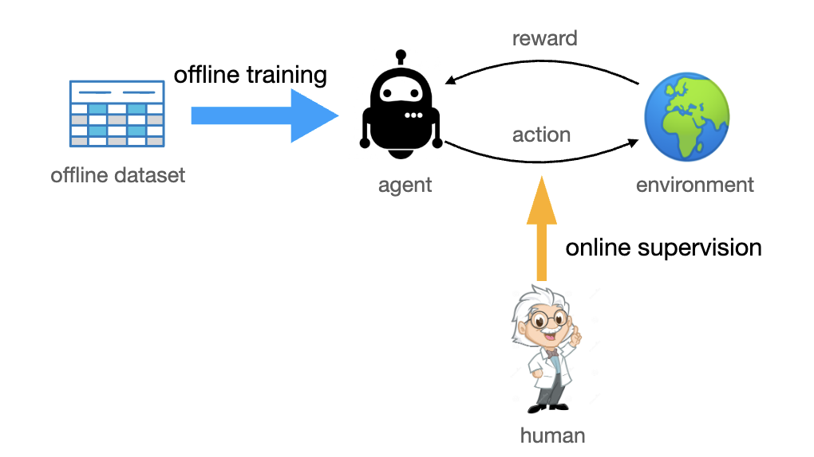 | Deploying Offline Reinforcement Learning with Human FeedbackZiniu Li, Ke Xu, Liu Liu, Lanqing Li, Deheng Ye, Peilin Zhao |
2022
| 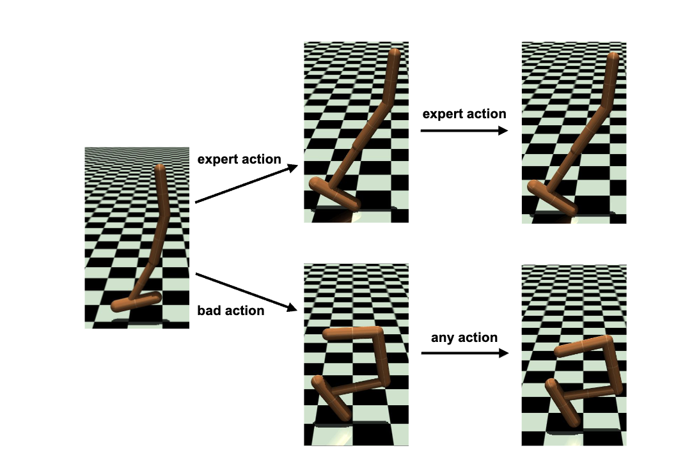 | Understanding Adversarial Imitation Learning in Small Sample Regime: A Stage-coupled AnalysisTian Xu*, Ziniu Li* , Yang Yu, Zhi-Quan Luo |
 |
Rethinking ValueDice: Does It Really Improve Performance?
Ziniu Li* , Tian Xu*, Yang Yu, Zhi-Quan Luo |
| 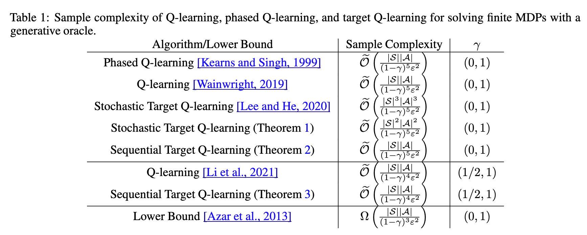 | A Note on Target Q-learning for Solving Finite MDPs with A Generative Oracle
Ziniu Li*, Tian Xu*, Yang Yu |
|
|
HyperDQN: A Randomized Exploration Method for Deep Reinforcement Learning
Ziniu Li, Yingru Li, Yushun Zhang, Tong Zhang, Zhi-Quan Luo |
2021
 |
A Concise Introduction to Imitation Learning (In Chinese)
Tian Xu, Ziniu Li, Yang Yu |
Error Bounds of Imitating Policies and Environments for Reinforcement Learning
Tian Xu, Ziniu Li, Yang Yu |
2020
| 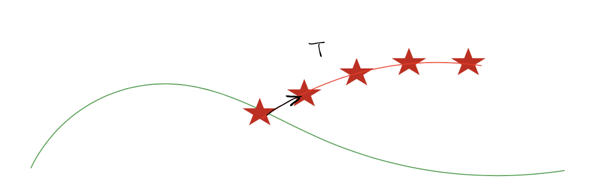 | Error Bounds of Imitating Policies and Environments
Tian Xu, Ziniu Li, Yang Yu |
| 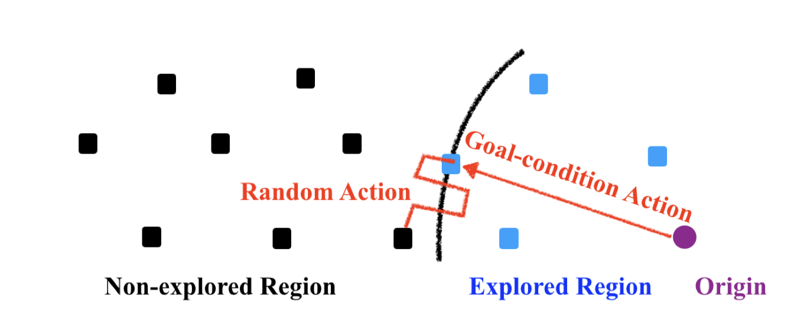 | Efficient Exploration by Novelty-pursuit
Ziniu Li*, Xiong-Hui Chen* |
| 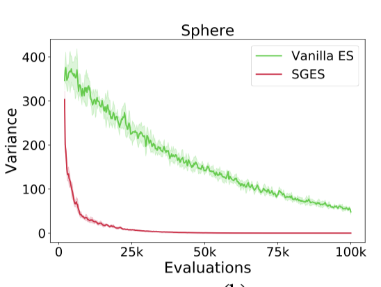 | Self-Guided Evolution Strategies with Historical Estimated Gradients
Fei-yu Liu, Ziniu Li, Chao Qian |